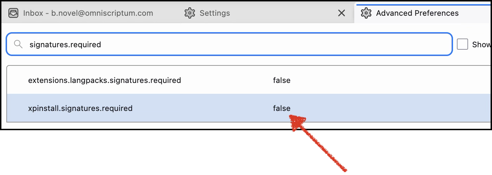

OmniReply
Generates draft email replies with AI right inside Thunderbird, using your V4 account and your Cover Playground links.
Download latestDownload the add-on
Click Download latest above and save omnireply-latest.xpi
somewhere you can find it (e.g. Downloads). Requires Thunderbird 140 or newer.
Get your V4 API key
Open v4.vdm-vsg.de, go to Account, and copy the API key shown below your signatures. Keep it handy — you'll paste it in step 5.

Allow internal add-ons (one-time)
This add-on is distributed internally, so it isn't signed by the public add-on store. You only need to do this once.
- Thunderbird menu → Settings (on Windows/Linux: the ☰ menu).
- General → scroll to the bottom → Config Editor… (accept the warning).
- Search
signatures.required→ double-clickxpinstall.signatures.requiredso it reads false.



Install from file
- Tools menu → Add-ons and Themes.
- Gear ⚙ (top-right) → Install Add-on From File…
→ choose the
.xpiyou downloaded → confirm Add.


Activate OmniReply
Open OmniReply's settings, paste the V4 API key you copied in step 2, and click Test connection — the status should show Ready.

Add your Cover Playground links
Paste your personal Cover Playground link for each imprint account you handle. OmniReply includes the matching link when a reply should carry your submission link.